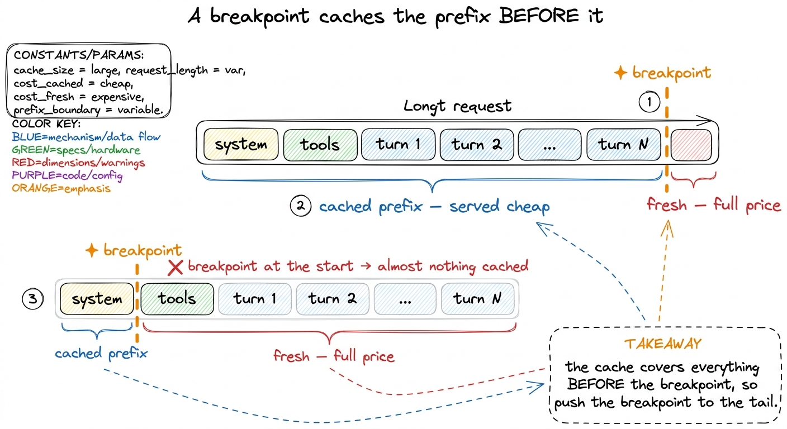
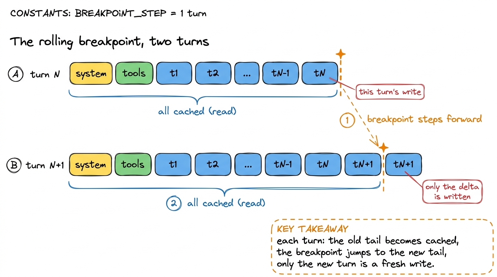
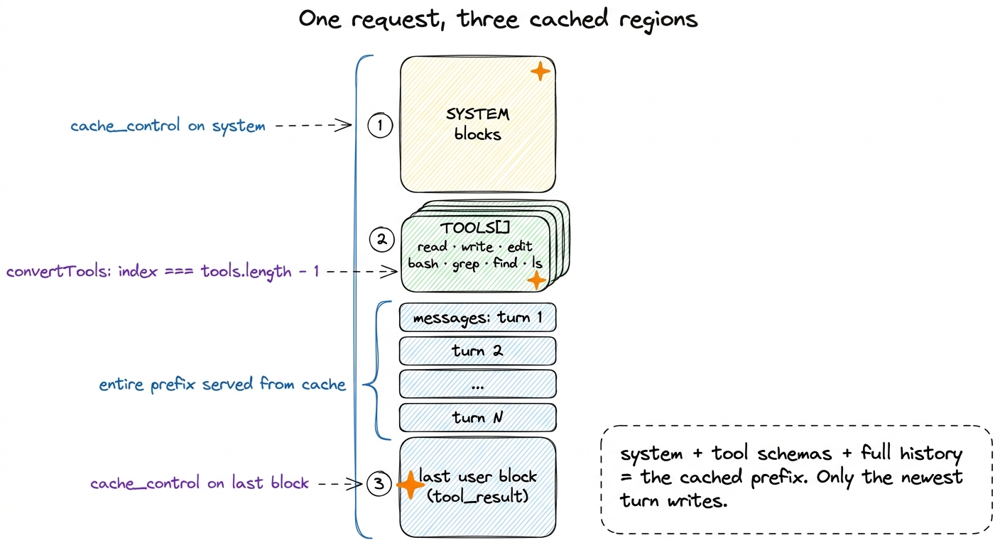
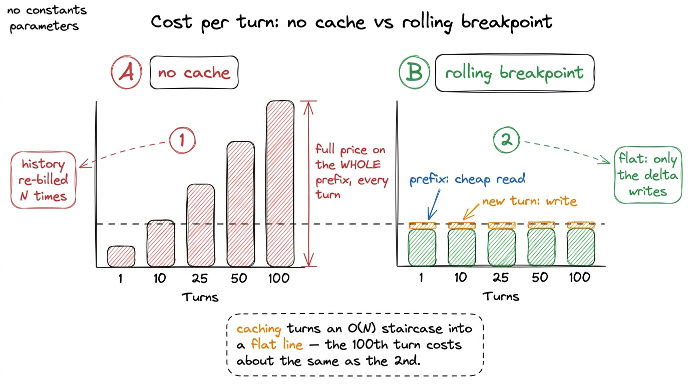

How Pi does cache control: the rolling breakpoint DEEP
A coding session is the most repetitive thing you will ever hand a language model. Every single turn, you re-send the entire conversation so far — the system prompt, every tool schema, and every prior turn — just to append one new tool result at the end and ask "what next?" The model is stateless; the growing prefix is how it remembers. And here is the quiet horror of it: without caching, you pay full input price for that whole prefix, again, on every lap of the loop. Turn 50 re-bills you for the same system prompt fifty times. This chapter is about the one trick that makes a 100-turn Pi session stay cheap, and why the trick is subtler than "turn caching on."
The obvious instinct is "add provider cache headers to reduce repeated context cost." That is the right start. But a header is a policy, and policy is where the interesting decisions live. Pi's cache logic sits in one file — packages/ai/src/api/anthropic-messages.ts — and the decision it makes is where to put the cache marker. Get that wrong and caching does nothing. Get it right and you get what Pi calls, in effect, a rolling breakpoint.
What a prefix cache actually caches
Start from how Anthropic's cache works, because the whole design falls out of one rule. You do not cache "the system prompt" or "the tools" as named things. You place a cache breakpoint on some content block, and the provider caches the entire prefix up to and including that block. Everything before the marker becomes a reusable cache entry; everything after it is fresh input. A breakpoint is a line drawn across the request: left of the line is cached, right of the line is billed at full rate.1 Anthropic supports up to four cache breakpoints per request, and matches the longest cached prefix on a read. Pi uses its budget deliberately — one on the tool block, one on the system blocks, one on the conversation tail — rather than sprinkling them.
This single rule tells you everything about placement. If you want the maximum cached, you want the line as far right as possible — at the very tail — because a breakpoint at the end caches everything before it.

figure rendering · A cache breakpoint caches the entire prefix up to it. Put it at the taThis is the mental flip most people miss. Your instinct is to cache the thing that never changes — the system prompt — so you mark it and stop. But marking only the system prompt draws the line far left: the tools and the entire message history sit to its right and get re-billed every turn. The stable-but-cheap part is cached; the growing-and-expensive part is not. You caught the wrong fish.
Pi's move: a breakpoint on the last user block
Here is the load-bearing comment, verbatim from anthropic-messages.ts:
// Add cache_control to the last user message to cache conversation history
if (cacheControl && params.length > 0) {
const lastMessage = params[params.length - 1];
if (lastMessage.role === "user") {
const lastBlock = lastMessage.content[lastMessage.content.length - 1];
if (lastBlock.type === "text" || lastBlock.type === "image" || lastBlock.type === "tool_result") {
(lastBlock as any).cache_control = cacheControl;
}
}
}Read what it does. It reaches for the last message in the request; if that message is from the user, it reaches for the last content block inside it — the newest tool_result, or the newest text/image the user just sent — and stamps cache_control onto that block. Not the system prompt. Not the first message. The very last block of the very last user turn.2 In a coding loop the last user message is almost always a tool_result — the harness feeding back the output of the tool the model just called. So in practice the breakpoint lands on "the result of the most recent action," which is exactly the frontier of the conversation.
Why the last block? Because of the prefix rule. Stamping the tail draws the cache line as far right as it can go, which means the cached prefix is the whole conversation up to now: system prompt, tool schemas, and every prior turn. On this turn, all of that is served from cache. Only the tiny sliver after the breakpoint — nothing, on this turn, since the breakpoint is the tail — is fresh.
Why it rolls
Now watch the next turn, because this is where "breakpoint" becomes "rolling breakpoint." The model responds, calls another tool, and the harness appends the new assistant message and the new tool_result. The conversation just grew by one turn. Pi runs the same code again — and the "last block of the last user message" is now the new tool result. The breakpoint moves forward to the new tail.
What does that buy you? The prefix that was fresh-written last turn is now cached (it's left of the new line), so it reads cheaply this turn. The only thing billed as a fresh cache write is the delta — the one turn that got added. Every turn, the cached region grows, the breakpoint steps forward to keep pace, and you pay a write for the increment only. The breakpoint follows the conversation like a cursor trailing the newest line of text.

figure rendering · Turn to turn, the breakpoint steps forward to the new tail. EverythingContrast this with the static approach a first attempt reaches for: mark the system prompt once and never move the marker. That caches a fixed, small region forever while the message history — the part that actually grows and dominates cost after a dozen turns — is re-billed in full every single turn. Pi's breakpoint is the opposite: it moves, and by moving it keeps the entire growing history inside the cached region.
Caching the tool block too
There is a second breakpoint, and it fixes a different leak. Tool schemas are large — a real coding agent ships read, write, edit, bash, grep, find, ls, plus MCP tools, each with a long instructional description and a JSON schema. That block is stable across the whole session but sizeable, and it sits before the messages. So Pi marks it too, in convertTools:
...(cacheControl && index === tools.length - 1 ? { cache_control: cacheControl } : {})The condition is index === tools.length - 1 — put the breakpoint on the last tool in the array. Same prefix logic, one level down: marking the final tool caches every tool definition before it as one contiguous chunk. The whole schema block becomes a single cached prefix segment that never gets re-billed as long as the tool set is unchanged.3 This is gated on compat.supportsCacheControlOnTools — Pi only sends the tool breakpoint to providers whose adapter reports it can cache on the tools array. The unified pi-ai layer keeps these per-provider quirks out of the agent's way. Pi threads the same cacheControl onto the system blocks as well, so the three stable regions — system, tools, and the conversation-so-far — are each anchored inside the cached prefix.

figure rendering · Pi anchors three breakpoints — on the system blocks, on the last toolThe TTL, and reading the meter
The marker itself is small: cacheControl = { type: "ephemeral", ...(ttl && { ttl }) }. The type: "ephemeral" is Anthropic's cache flavor; the optional ttl selects how long the entry lives. Pi supports the 1-hour TTL and tracks it distinctly — usage.cacheWrite1h is populated from cache_creation.ephemeral_1h_input_tokens on the response. That matters because a longer TTL survives think-time between turns: step away for a few minutes mid-session and a 1-hour entry is still warm when you return, so the next turn is a cheap cache read instead of a full re-write.4 This same usage block is what the context engine reads to decide when to compact — calculateContextTokens sums cacheRead + cacheWrite alongside input and output. Caching and compaction share one honest, provider-reported token count. See compaction and summarization.
What this buys, in one picture
Put the two regimes side by side. Without caching, every turn re-bills the full prefix — a staircase of cost that climbs with the conversation, because turn N pays for all N turns of history at full input price. With Pi's rolling breakpoint, the prefix is a cache read (a fraction of the price) and only the one new turn is a write. The cost per turn stops climbing; it flattens to roughly one turn's worth of tokens, no matter how long the session runs.

figure rendering · Without caching, per-turn cost climbs as the history re-bills in full.That flat line is the whole point. It is why a 100-turn Pi session does not cost a hundred times a one-turn session. The system prompt is written once and read ninety-nine times; the tool schemas, written once and read ninety-nine times; the history, always cached up to its tail, always one write behind the frontier.
The idea to keep
Adding cache headers is the easy part; Pi shows that the engineering is entirely in where. A cache breakpoint caches its prefix, so you place it at the tail, and because the tail moves you get a rolling breakpoint that keeps the entire conversation inside the cached region for free. Three markers — system, last tool, last user block — and a stateless model re-reading its whole memory every turn becomes almost free to run.
It pairs with the other two Layer-3 mechanisms exactly. Tool-output truncation keeps each turn's payload small so the delta you write is small. Compaction keeps the total prefix from ever exceeding the window. And caching makes re-sending that bounded, compacted prefix nearly costless. For how these three fit into the larger picture, see the context window as a resource and the Pi internals overview.